Using a convolutional neural network, we were able to estimate facial keypoints on a dataset of faces.
We trained on a set of 192 faces and preselected keypoints.
We first trained the network to predict only nosetip keypoints. A dataloader was created to load all the images and points from a folder.
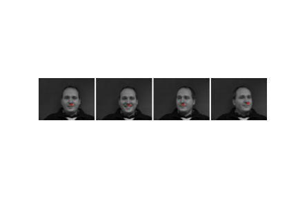
I created a network with 3 convolutional layers, each followed by a relu and maxpool layer, and then 3 fully connected layers. The convolutional layers had a filter of 5x5 and a stride of 1, and the pool layers had a stride of 2. After the convolutional layers, I ended up with 64 channels. The network was trained for 10 epochs- we ran the network 10 times against all the training images, and allowed back propagation to fine tune the weights. With a learning rate of 1e-3, we were able to reduce the MSE loss in an asymptotic manner. I trained the network for 10 epochs- cycling through all the training data 10 times to fine tune the weights.
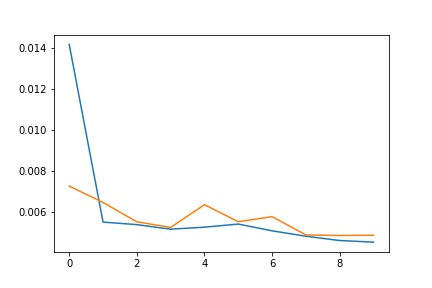
In these two pictures, the nosetip was correctly detected when comparing to the original keypoints.
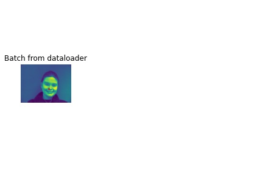
Here, the predicted point was farther off. This could be due to different nose shapes affecting the brightness value at a specific spot, or the face being in a completely different location than the rest of the dataset.
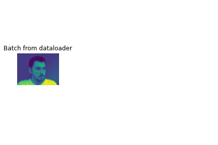
I decreased the learning rate to 1e-4, and noticed that the error converged in about 2 epochs to the minimum, whereas before it converged after 1.
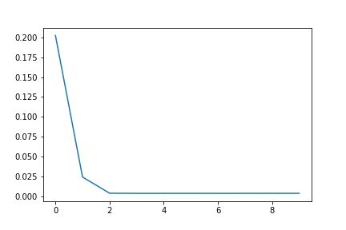
I also played with the network parameters- by decreasing the filter size from 5x5 to 3x3, I noticed that the error rate was a bit higher, and was more on par with the validation error rate..
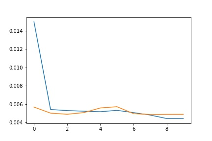
After predicting one datapoint, we moved on to predicting all 58 facial keypoints. I used a network of 5 convolutional layers with a kernel size of 3 that output 120 channels. All were followed by a relu and maxpool layer of stride 2, and then 3 fully connected layers that reduced the input to the x and y coordinates. To increase the number of unique images in the dataset, I applied data augmentation. I randomly chose whether an image would be shifted by 10 pixels or have its color values change, and adjusted the training keypoints accordingly.
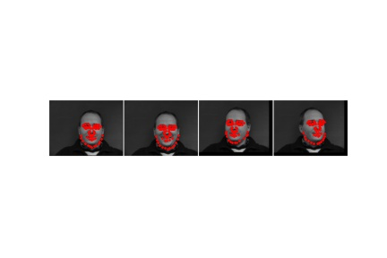
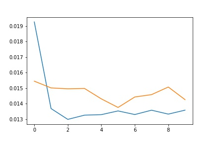
As with in part 1, The network performed better on images where the face was forward and centered in the average location.
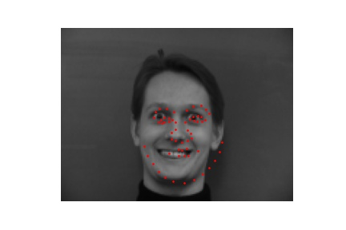
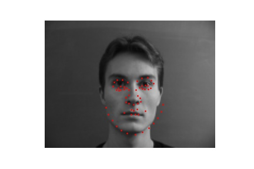
Where the face was off to the side and partially obstructed, the network continued to predict the average keypoint location.
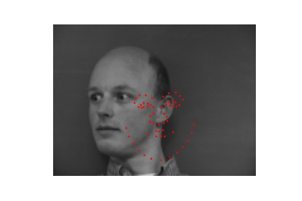
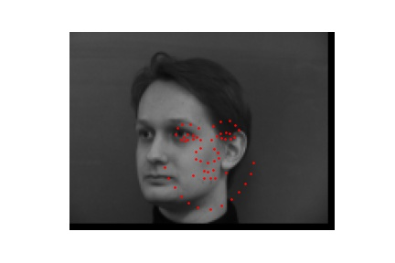
The learned filters on the first layer looked like this:
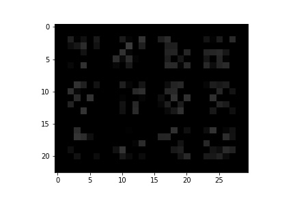
Using the pretrained model ResNet18, I then trained the network on 6666 images with faces at different sizes and angles. Each image had 68 facial points, and the image needed to be cropped to an equal size.
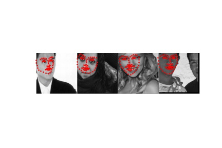
The ResNet18 model had 4 layers, each following the sequence convolve->batch norm->ReLU->convolve->batch norm, then a downsampling sequence convolve->batch norm. A 3x3 kernel was used for all convolutions, and a stride of 2 was used for the first convolution and downsampling convolution. The network took in 1 channel and output 136 channels for each x and y coordinate for the 68 points.
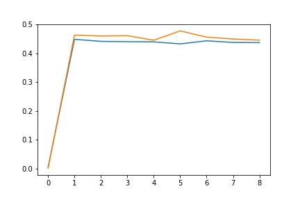
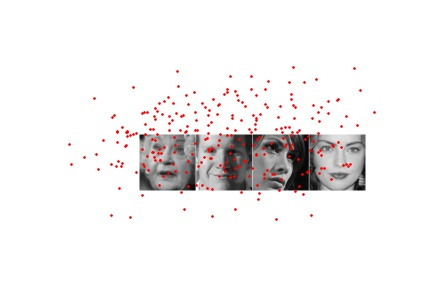
I then tested the network on some of my own images, which had no training points.
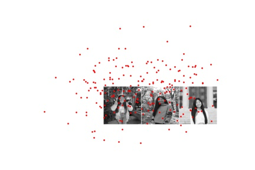
After predicting the test data with the ResNet model, I then predicted the points using a fully convolutional network. A heatmap of pixelwise predictions are made for each keypoint, and the weighted average is taken to get these keypoints. I used a UNet model to train the data and run the same test set, but created heatmaps for each landmark as the training points. The gaussian used had a sigma of 2 and was size 10.
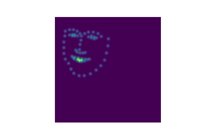
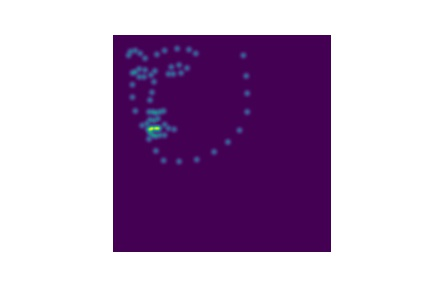
The model contains 4 encoder layers, a bottleneck layer, and 4 decoder layers. Each layer has the following sequence: convolve->batch norm->ReLU->convolve->batch norm->ReLU, with a kernel of size 3x3 and a stride of 1.
.jpg)